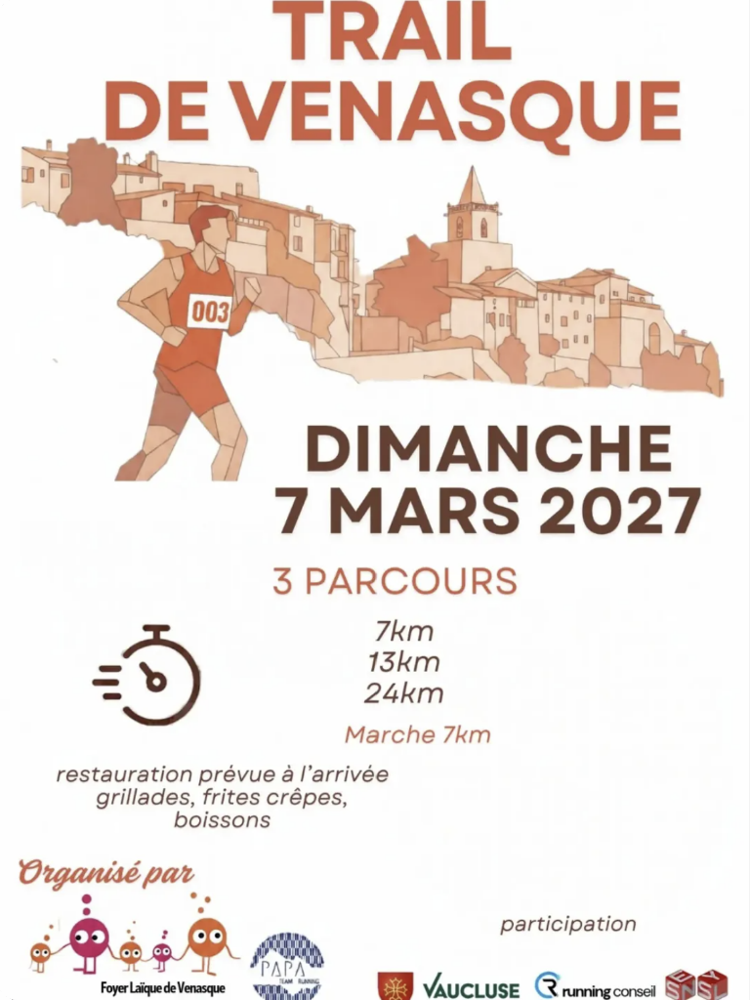
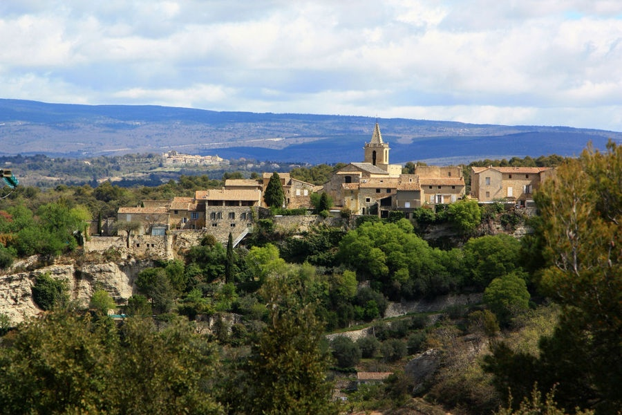
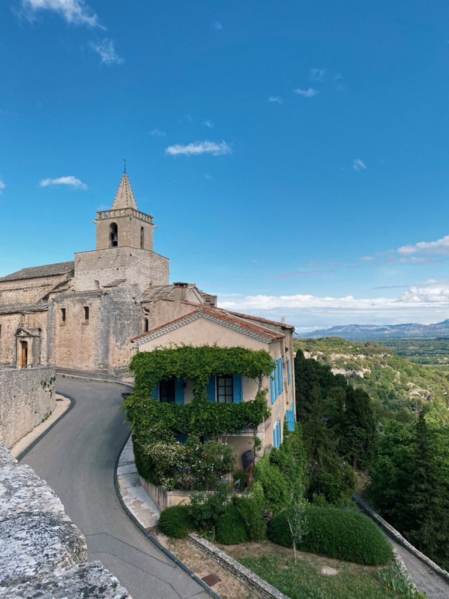
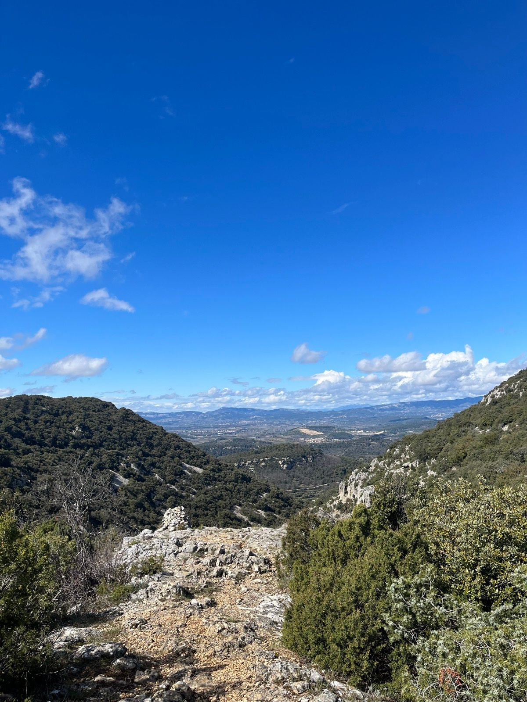
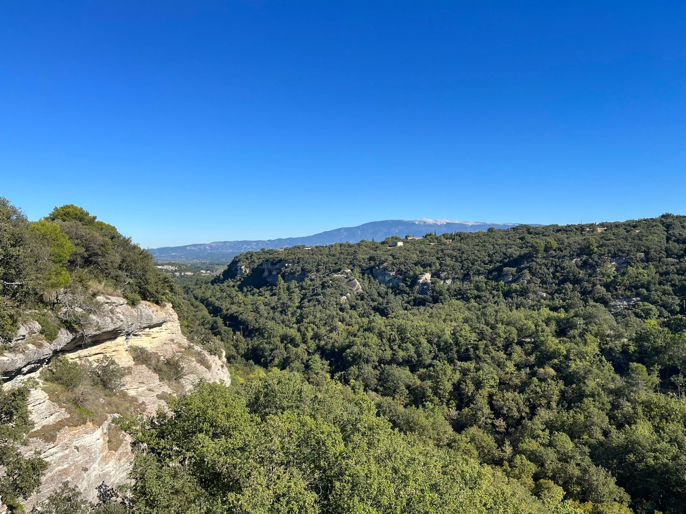
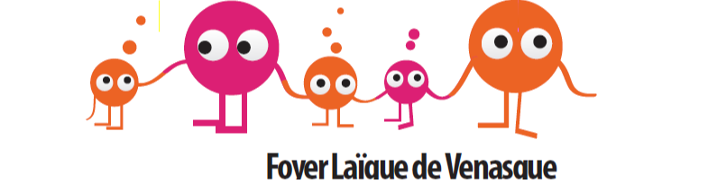
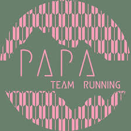

Dimanche 7 Mars 2027
3 parcours au cœur des falaises et sentiers du Vaucluse : 7 km, 13 km, 24 km & Marche 7 km.
Départ dans

Sélectionnez un parcours ci-dessous pour afficher son profil altimétrique détaillé et explorer son tracé sur la carte interactive.
Le Grand Défi des Crêtes
L'Intermédiaire des Sous-Bois
Le Rapide du Village
La Marche Solidaire
Un parcours accessible de 7,3 km (~160 m D+) sans chronométrage pour profiter des paysages et falaises de Venasque à votre rythme. Idéal pour les familles, enfants et accompagnateurs souhaitant soutenir les projets de l'école du village.
Tracé technique conçu par Mathieu Olivier (Team PAPA) • Points vert (Départ) & rouge (Arrivée) Place de la Fontaine
Dimanche 7 Mars 2027
Départs Place de la Fontaine • Venasque
Restauration festive prévue à l'arrivée avec le Foyer Laïque de Venasque pour partager un moment convivial après l'effort :
Courir à Venasque, c'est aussi courir pour la bonne cause. L'organisation est 100% bénévole.
Objectif 2027
L'intégralité des bénéfices de la course financera directement les projets scolaires et périscolaires de l'école du village de Venasque.
Village perché entre Monts de Vaucluse et Mont Ventoux, Venasque vous accueille sur la Place de la Fontaine dès 07h30 pour le retrait des dossards. Des parkings fléchés par nos bénévoles vous attendent à l'entrée du village ainsi qu'une consigne sacs gratuite près du départ.
Top Finishers par distance (distances édition 2026 : 30K, 20K, 10K)
| Rang | Nom | Dossard | Distance | Catégorie | Temps | Club / Ville |
|---|
Découvrez les paysages réels du parcours et retrouvez les ~80 photos de la course publiées par la Team PAPA sur Facebook

Venasque Perché
Vue panoramique sur le village historique et les Monts de Vaucluse.

Cœur du Village
Le clocher de l'église et la montée vers le centre historique de Venasque.

Sentiers Calcaires
Passage rocailleux et cairn sur les monotraces au-dessus de la vallée.

Falaises & Ventoux
Chênes verts, falaises provençales et vue dégagée sur le Mont Ventoux.
Les inscriptions pour le 7 mars 2027 (7 km, 13 km, 24 km & Marche 7 km) se feront en ligne sur notre partenaire Le-Sportif.com. Recevez le lien direct dès l'ouverture des dossards ou posez votre question à l'équipe.
Envie de vivre la course de l'intérieur ? Signaleur sur les sentiers, tenue de ravitaillement, accueil dossards ou buvette avec le Foyer Laïque : chaque coup de main aide directement l'école de Venasque !
Organisé par


Une question sur les parcours, les inscriptions ou le bénévolat ? L'équipe vous répond.